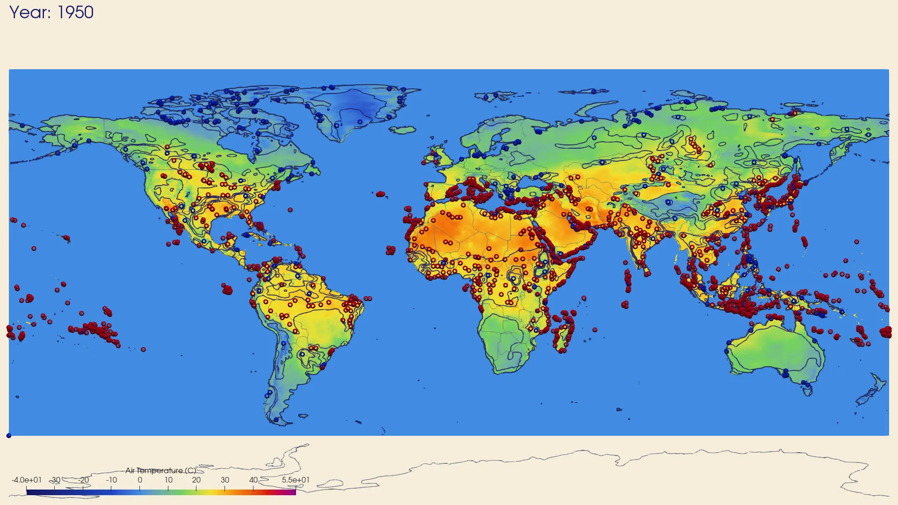
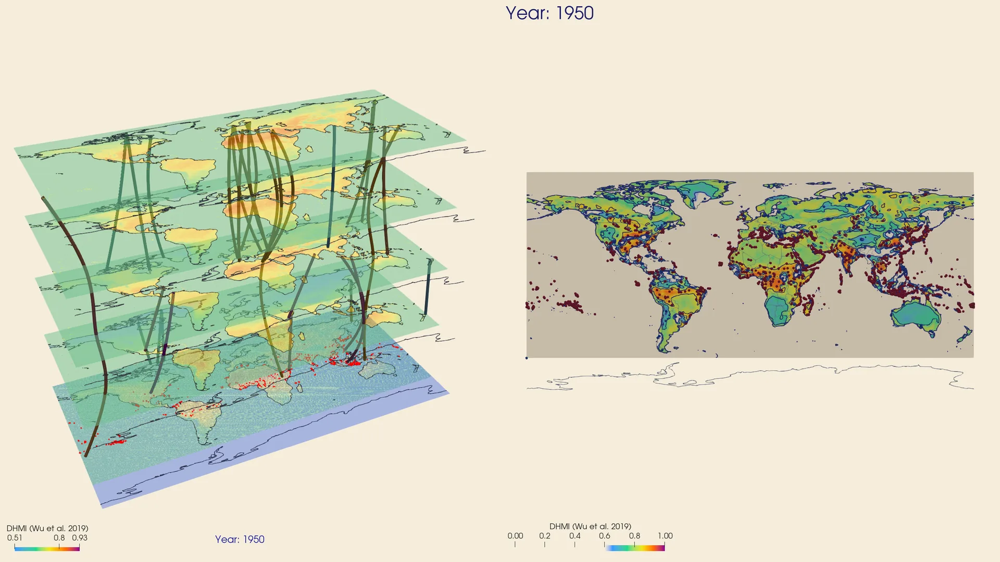
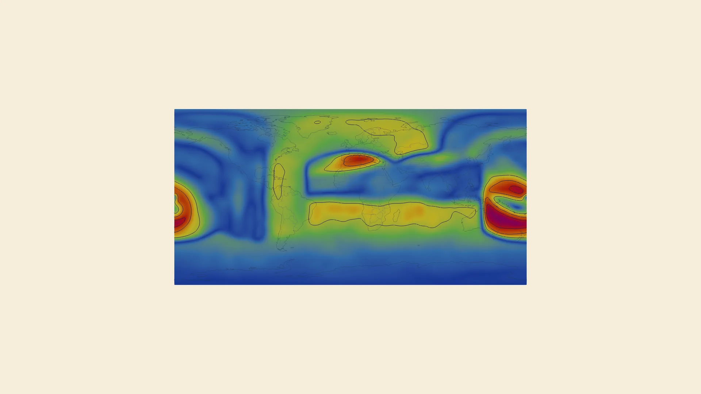
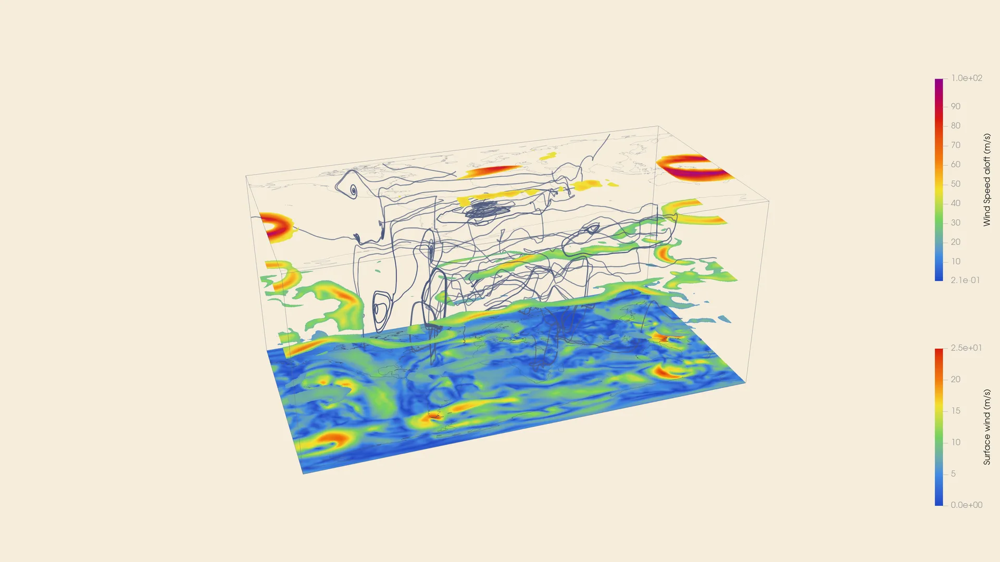
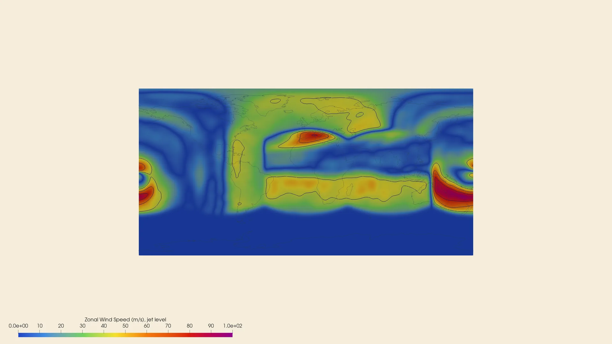
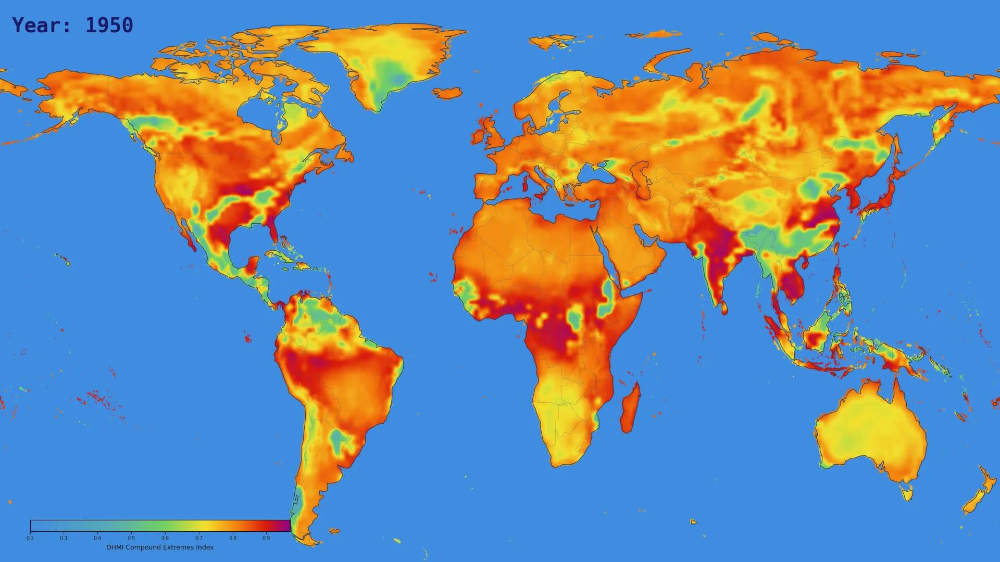

A topological and atmospheric analysis of compound extreme events from the NEX-GDDP-CMIP6 / ACCESS-CM2 model, 1950--2025.
Datasets
Two complementary NASA-provided datasets underpin all tasks. Together they span 75 years of surface climate and 16 weather-scale atmospheric snapshots at kilometre resolution.
Task 0
Two independent views of the same 75-year compound-extremes record. Each has its own year slider. The hero thumbnails mark the four most significant years identified in our analysis.
The Dry-Hot Magnitude Index (DHMI = 0.4·T̂ + 0.4·(1−P̂) + 0.2·Ĥ) combines normalised temperature, precipitation deficit, and humidity anomalies into a single compound-stress scalar per grid cell. Drag through all 76 years to watch hotspots emerge and intensify -- the Amazon and South-East Asian corridors show the strongest long-term accumulation, with the single most intense individual event recorded in 1952 (Amazon, persistence 0.99).

TTK persistence diagram (saddle-to-maximum pairs, threshold 0.04) identifies ~750 coherent compound-stress features per year. Wasserstein-1 matching links features across consecutive years, producing space-time tubes that trace feature birth, death, merging, and splitting across the 76-year record. The 29 most persistent tubes are shown; the dual-panel view combines the tube structure (left) with the DHMI scalar field (right).

Task 1
Wind speed across five altitude layers -- surface through the jet stream -- illustrates jet stream structure and temporal variability during a single short model run. Three complementary views below.
A 2D global map of wind speed at jet level with streamline tubes overlaid. Contour lines at 40, 60, and 80 m/s mark the jet core. The 16 timesteps step through the single short model run, capturing jet stream structure and variability at weather time-scales.

Five altitude layers rendered as stacked transparent surfaces with stream tubes. The tubes reveal how wind energy propagates vertically across pressure levels, from the lower troposphere to the jet stream.

A 100-frame interpolated sequence of zonal wind speed at jet level at 10 fps. The dense temporal sampling captures jet meandering, splitting, and reformation within the single short model run.

Cross-Task
DHMI persistence values and upper-level jet stream position overlaid in a single 2D map for five key years. The overlay reveals qualitative spatial co-occurrence between surface compound extremes and jet stream waviness.

Video
The complete animated walkthrough of all tasks -- DHMI field, topological analysis, atmospheric dynamics, and the surface-atmosphere cross-task overlay.
Key Findings
Five topological and atmospheric insights from the 75-year CMIP6 analysis.